Overview
My research focuses on intelligent construction, with a particular emphasis on embodied intelligence in construction processes,
aiming to develop innovative technologies that enhance the efficiency, safety, and sustainability of construction
through advanced sensing, artificial intelligence, and robotics.
专注于智能建造，特别强调建造过程中的具身智能；
致力于开发创新技术，通过先进的传感、人工智能和机器人技术来提高建造的效率、安全性和可持续性。
Research Interests
1. Non-contact Sensing for Construction Materials 无损感知
- Non-contact Rheology Measurement: Measure the rheological properties of construction materials, such as concrete, without physical contact.
This enables real-time monitoring of material performance during mixing, transportation, and placement.
非接触流变测量：在不与混凝土等建筑材料物理接触的情况下测量其流变特性。应用于混凝土搅拌、运输和浇筑过程中实时监测材料性能。 - Visual Perception for Embodied Intelligence: Researching the use of visual technologies to achieve non-contact monitoring and control of 3D printed concrete.
面向具身智能的视觉感知：研究利用视觉技术实现对3D打印混凝土的非接触监测和控制。
2. Concrete 3D Printing 建筑打印
-
Reinforcement Technology: Investigating innovative methods to integrate reinforcement into 3D printed concrete structures.
加固技术：研究将钢筋整合到3D打印混凝土结构中的创新方法。 -
Interface Repair: Investigating innovative methods to repair interfaces in 3D printed concrete structures.
界面修复：研究修复3D打印混凝土结构中的界面问题，提高结构的强度和稳定性。
Publications

2026
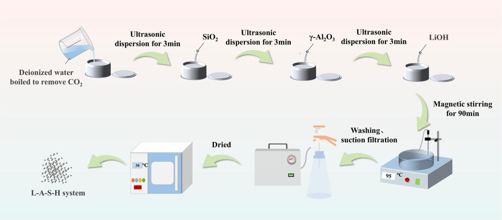
Yuan FANG, Wenyang ZHANG, ..., Xiangpeng CAO *
Research Article / January 2026 / Cement and Concrete Composites
2025
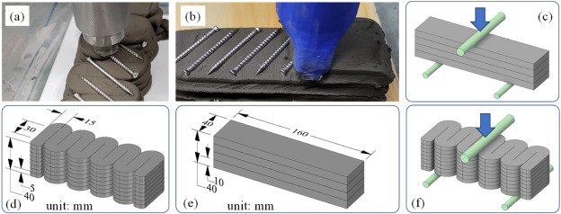
Xiangpeng CAO, Hongzhi CUI*
Research Article / April 2025 / Journal of Building Engineering
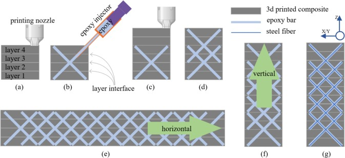
Xiangpeng CAO, Shuoli WU, Hongzhi CUI*
Research Article / February 2025 / Automation in Construction
2024
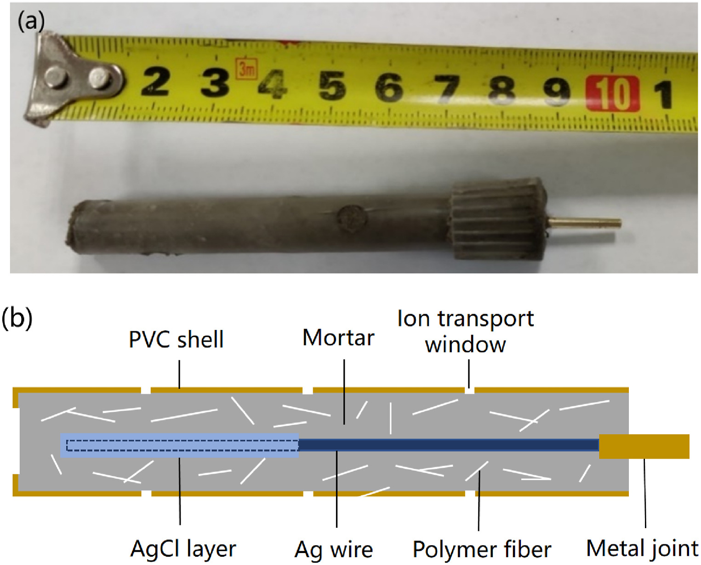
Hongzhi CUI, Lele CAO, Xiangpeng CAO *, Shiheng YU, Mingyang HUANG
Research Article / December 2024 / Journal of Building Engineering
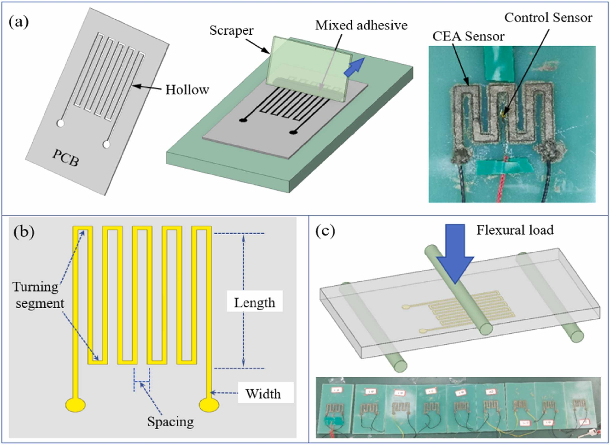
Hongzhi CUI, Lu BAI, Xiangpeng CAO *, Shiheng YU
Research Article / October 2024 / Construction and Building Materials
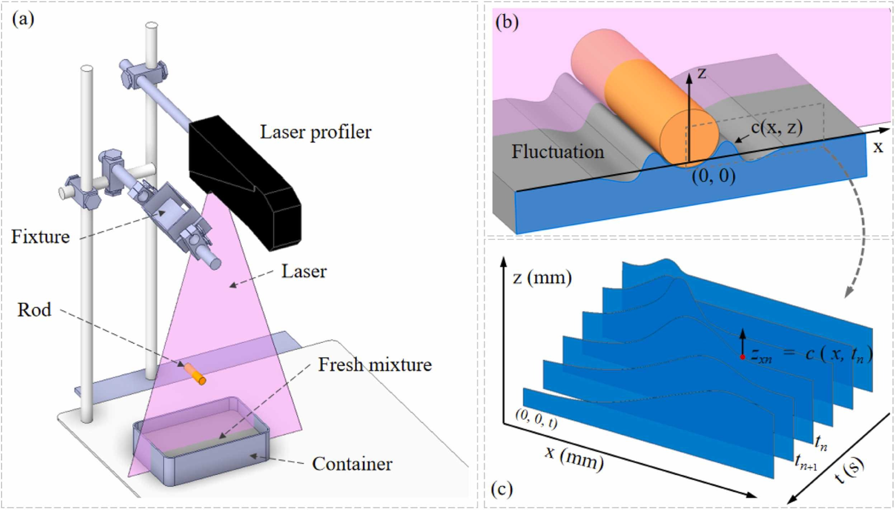
Hongzhi CUI, Lele CAO, Xiangpeng CAO *
Research Article / September 2024 / Construction and Building Materials
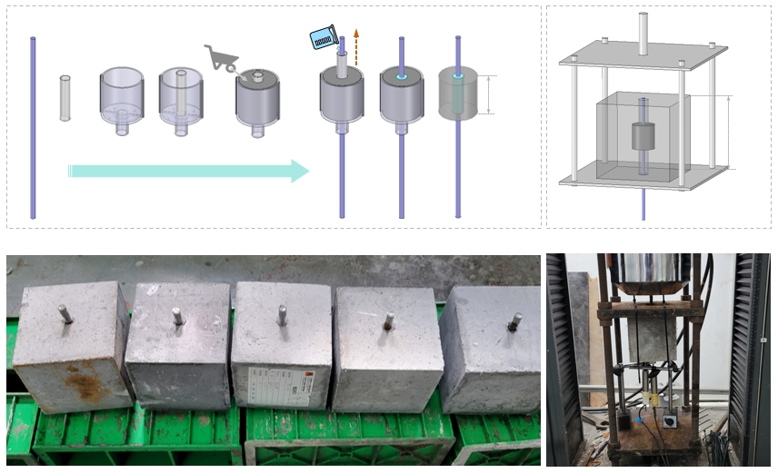
Hongzhi CUI, Lele CAO, Xiangpeng CAO*, Shuoli WU
Research Article / July 2024 / 建筑材料学报
2023
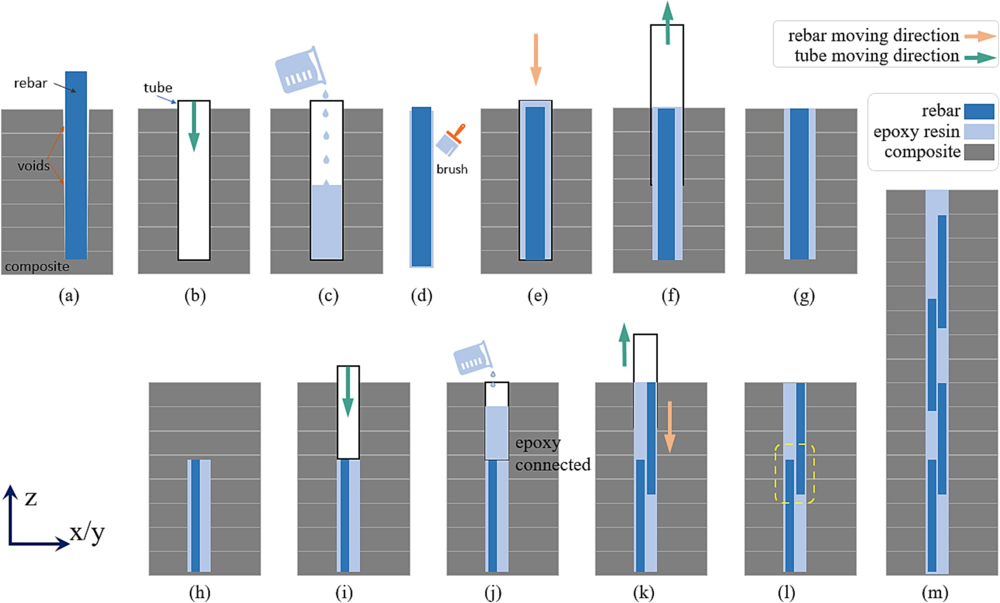
Xiangpeng CAO, Shiheng YU, Hongzhi CUI*
Research Article / October 2023 / Construction and Building Materials
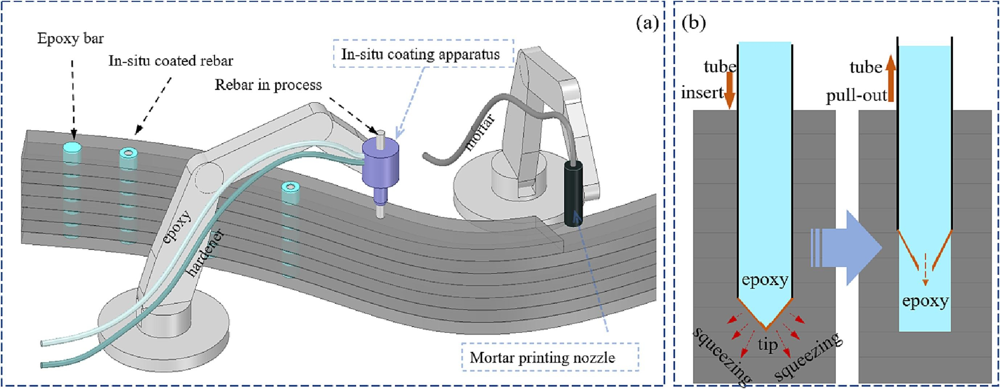
Xiangpeng CAO, Shiheng YU, Hongzhi CUI*, Zongjin LI
Research Article / September 2023 / Construction and Building Materials
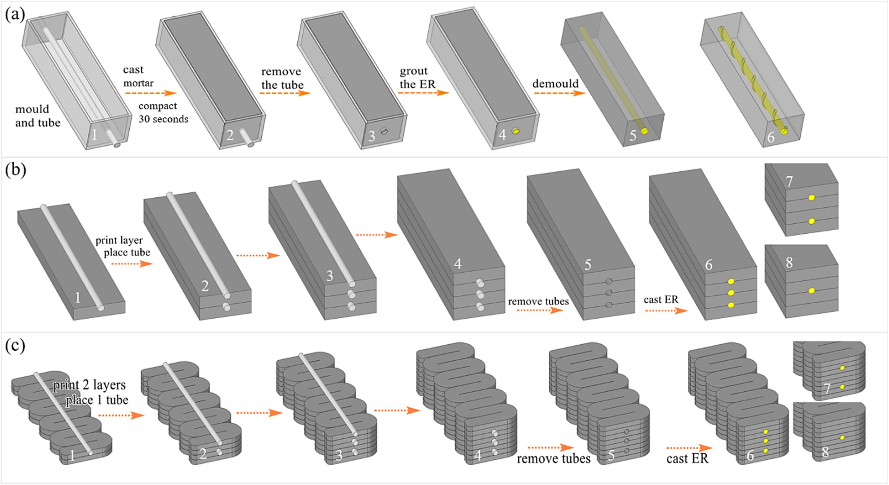
Xiangpeng CAO, Shiheng YU, Shuoli WU, Hongzhi CUI*
Research Article / January 2023 / Construction and Building Materials
2022
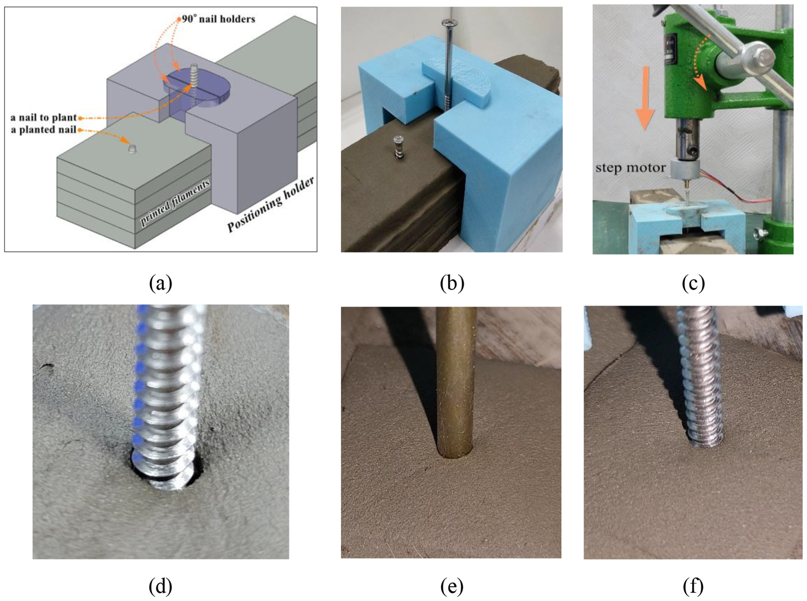
Xiangpeng CAO, Dapeng ZHENG, Hongzhi CUI*
Research Article / September 2022 / Automation in Construction
early
- Cui, H., Yu, S., X. CAO & Yang, H. Evaluation of printability and thermal properties of 3D printed concrete mixed with phase change materials. Energies 15, 1978 (2022).
- Cui, H., X. CAO et al. Experimental study of 3D concrete printing configurations based on the buildability evaluation. Applied Sciences 12, 2939 (2022).
- X. CAO, Yu, S., Zheng, D. & Cui, H. Nail planting to enhance the interface bonding strength in 3D printed concrete. Automation in Construction 141, 104392 (2022).
- X. CAO, Yu, S., Cui, H. & Li, Z. 3D printing devices and reinforcing techniques for extruded cement-based materials: a review. Buildings 12, 453 (2022).
- X. CAO, Yu, S. & Cui, H. Experimental investigation on inner-and inter-strip reinforcements for 3D printed concrete via automatic staple inserting technique. Applied Sciences 12, 2099 (2022).
- X. CAO & Li, Z. in 3D Concrete Printing Technology 211-222 (Elsevier, 2019).
- Fu, Y. C., X. CAO & Li, Z. Printability of magnesium potassium phosphate cement with different mixing proportion for repairing concrete structures in severe environment. Key Engineering Materials 711, 989-995 (2016).